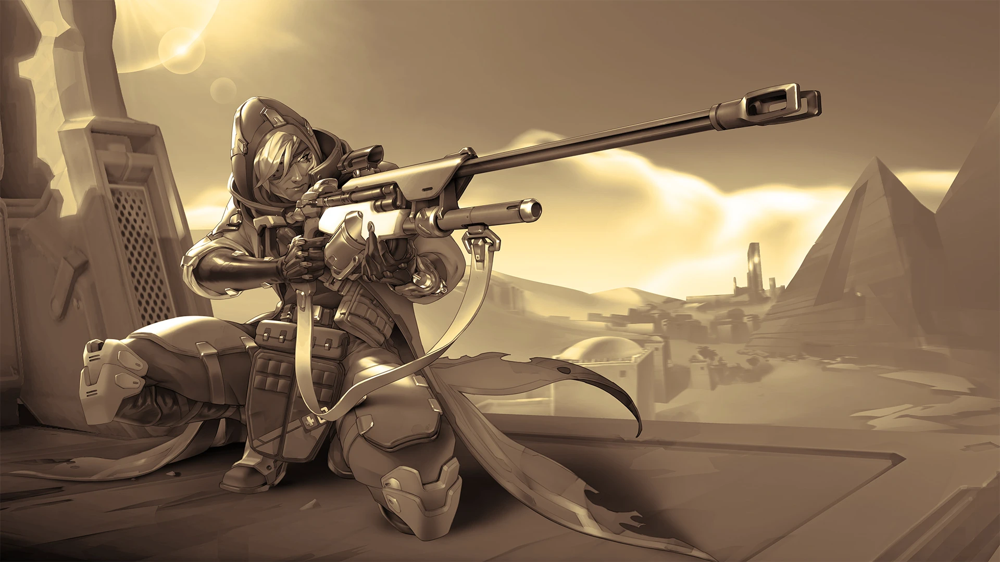
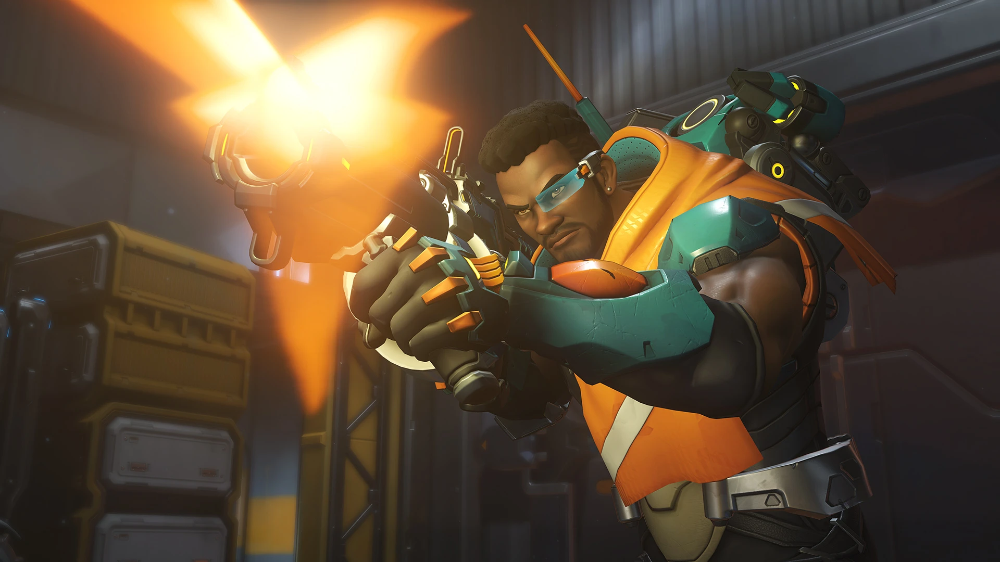
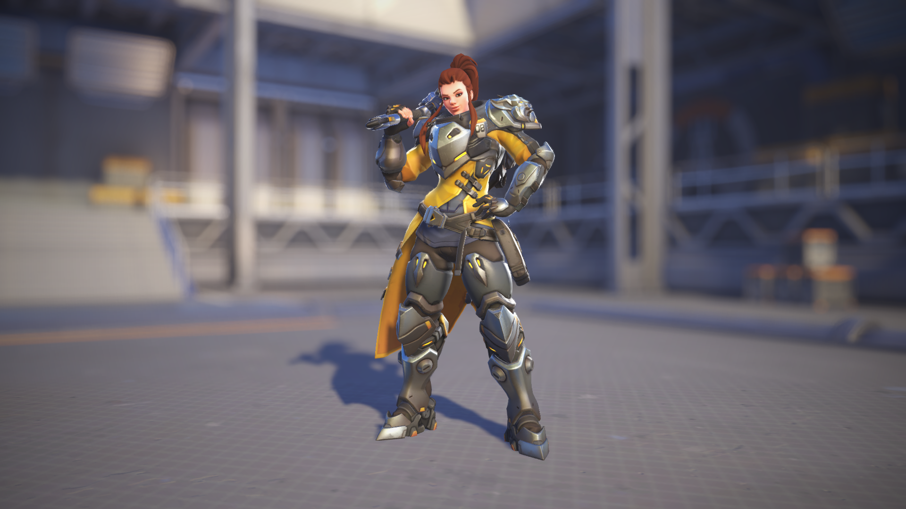
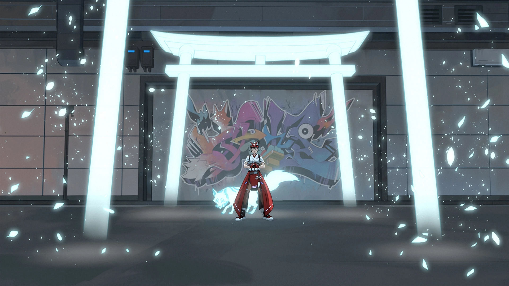
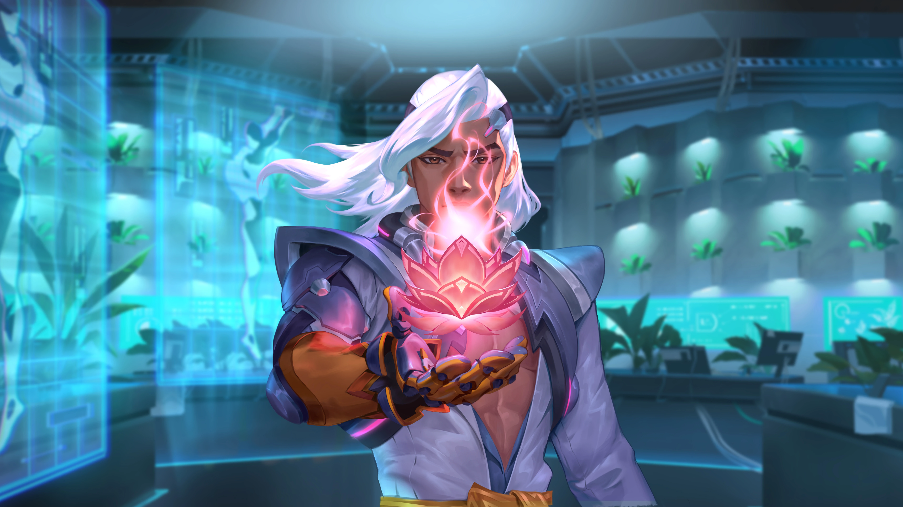
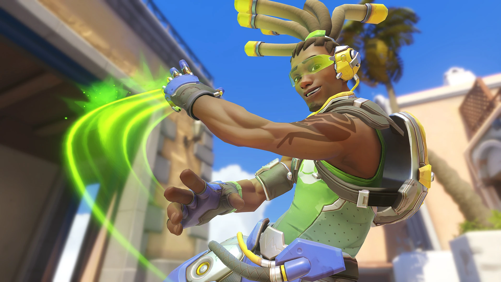
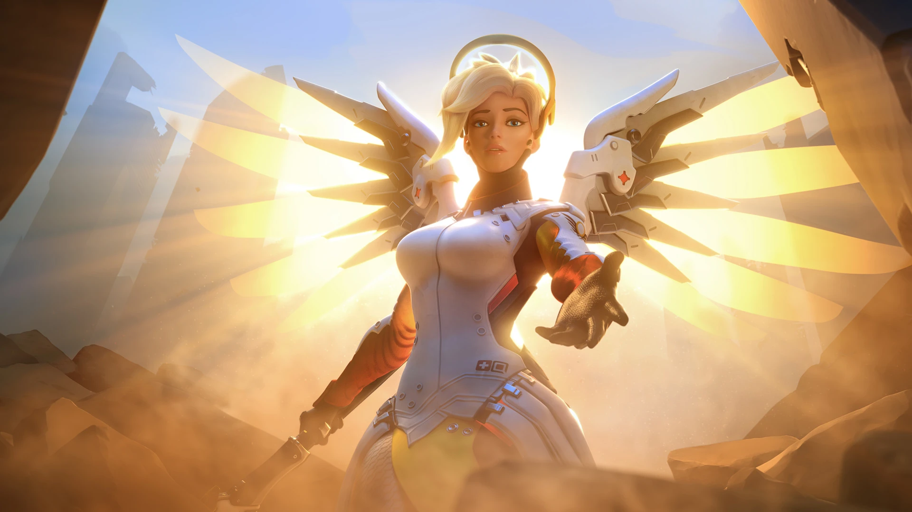
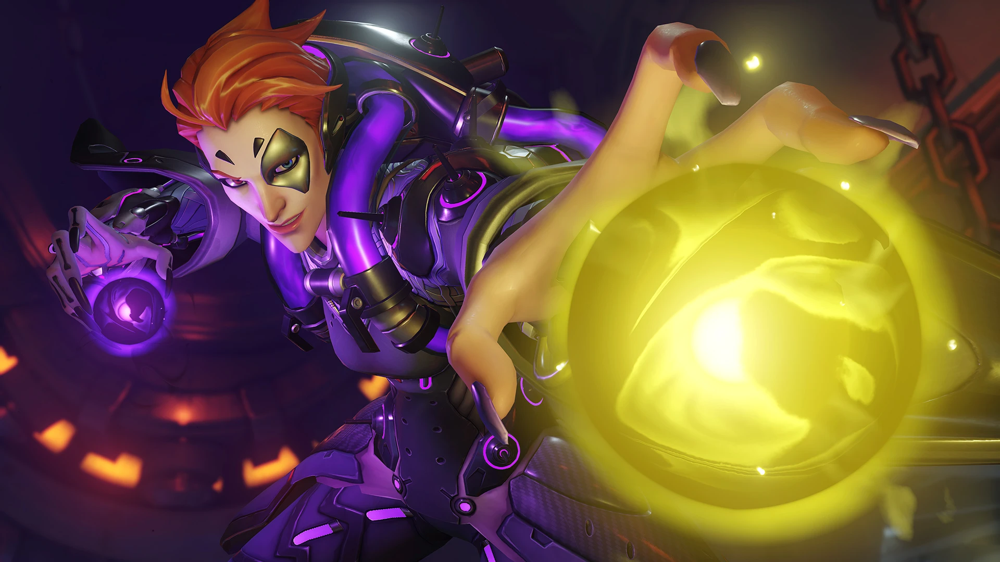
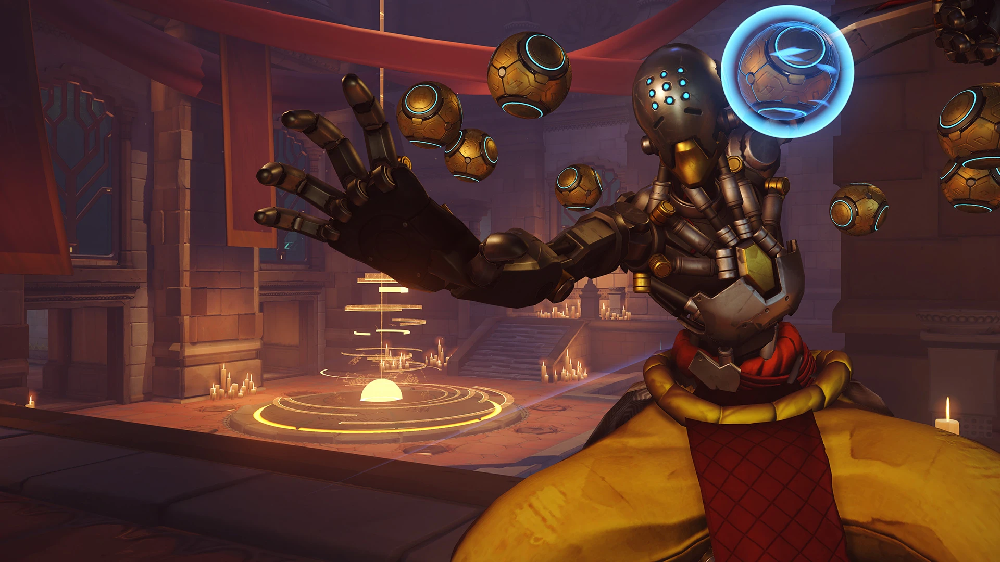

Heroes de Soporte
Los héroes de apoyo potencian a los aliados sanándolos, escudándolos, incrementando su daño o deshabilitando a los enemigos. Como apoyo, eres la columna vertebral de la supervivencia del equipo.

Ana
Ana Amari, una de las fundadoras de Overwatch y conocida como la mejor francotiradora del mundo en su día, proviene de un extenso linaje de militares veteranos condecorados. Se creyó que había muerto en un tiroteo con Talon, pero reapareció para proteger a su país, su familia y sus aliados más cercanos

Baptiste
Baptiste es un médico de combate de élite al que Talon consiguió atraer con la promesa de grandes riquezas. Sin embargo, arrepentido por lo que había hecho, desertó de la organización para esbozar su propio camino. Ahora, trabaja para mejorar el mundo, sanando a quien puede y luchando contra quien debe.

Brigitte
Brigitte es una Lindholm de la cabeza a los pies con un don para la ingeniería, solo a la altura de su sentido del honor. Desde muy joven, a Brigitte le cautivaron las historias de valentía que le contaba su padrino Reinhardt. Cuando alcanzó la mayoría de edad, se convirtió en su escudera. Ambos se han unido a Overwatch con la esperanza de acabar con las injusticias del mundo.

Kiriko
Kiriko aprendió el letal arte del ninjutsu con su madre, Asa. Cuando el clan Shimada cayó, los rivales Hashimoto secuestraron al padre de Kiriko; para mantenerla a salvo, se mudó con su abuela, quien le enseñó el arte de la sanación. Años más tarde, Kiriko ha vuelto a su hogar para liberar a la gente del cruel dominio de los Hashimoto.

Lifewiver
El artista, activista e inventor Lifeweaver creó una nueva forma de vida capaz de sanar heridas, curar enfermedades y, quién sabe, quizá también pueda salvar a toda la humanidad..., siempre y cuando la corporación Vishkar no dé con él antes.

Lucio
Lúcio se crio en las humildes favelas de Río de Janeiro antes de convertirse en un famoso DJ alternativo. Sin embargo, cuando la corporación Vishkar reurbanizó la ciudad y tomó medidas con la comunidad, Lúcio rescató la tecnología sónica de su padre de la corporación y la utilizó para que su pueblo se rebelara. Hoy en día es toda una celebridad mundialmente conocida que trabaja por conseguir un cambio social a través de su música y sus acciones.

Mercy
Angela Ziegler, niña prodigio y pionera en materia de nanotecnología, quedó huérfana durante la Crisis Ómnica y se convirtió en la médica de combate más importante de Overwatch y portavoz mundial por la paz. Tras la desaparición de la organización y la llegada de una nueva guerra, se pregunta si llegará el día en que pueda conocer cómo es vivir en paz.

Moira
A la controvertida genetista Moira O'Deorain solo le preocupaban los avances evolutivos de la humanidad. Aunque su trabajo le ha granjeado muchos enemigos, su alianza con el colectivo científico de Oasis y la despiadada organización Talon le ha permitido liberarse de cargas monetarias y morales, además de ofrecerle la posibilidad de perseguir hallazgos con gran eficacia... y crueldad.
